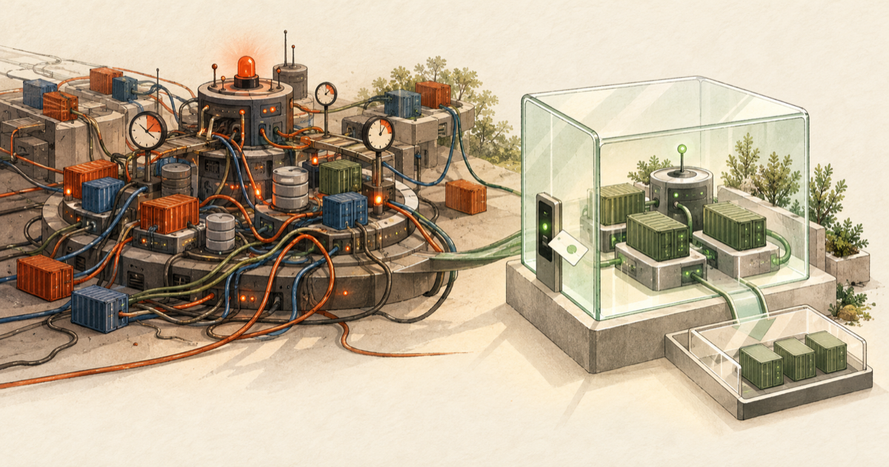
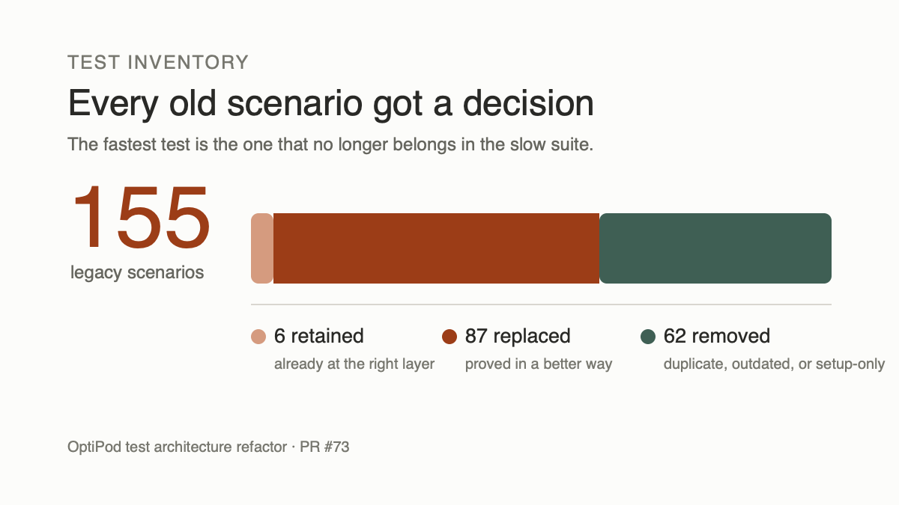
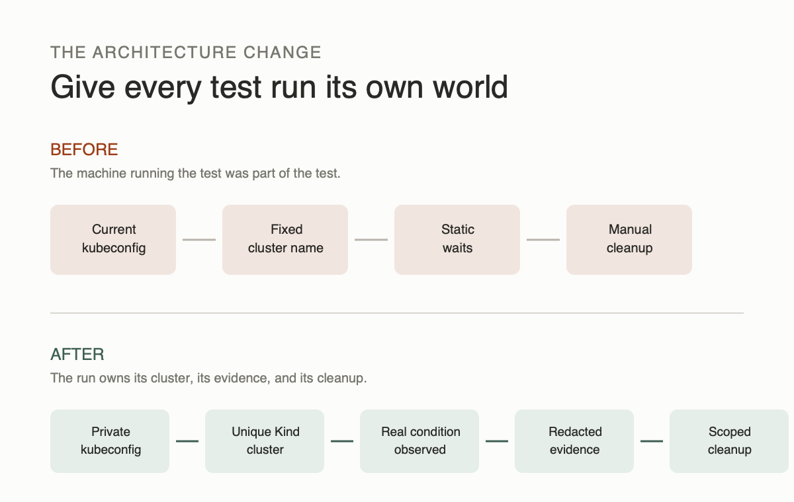
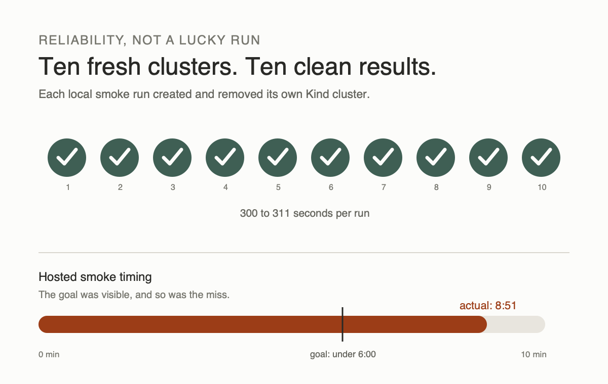

A Green Test Suite Should Let You Relax. Mine Did Not.
A green test suite should let you relax.
Mine made me check the Kubernetes context one more time.
That small habit told the truth.
OptiPod had a large test suite, but I did not fully trust it. Before a run, I worried about which cluster it would touch. After a failure, I had to ask whether the code was broken or the setup had drifted. Even after a pass, I was not always sure the test had proved the behavior that mattered.
That is a bad place for an open source project to be. Tests are meant to remove doubt. These tests were creating more of it.
So I stopped fixing flakes one by one. I used a Factory Mission to rebuild the test architecture itself.
The result was a merged pull request that changed 219 files, added about 25,000 lines, removed about 19,600 lines, and finished with all checks green.
But the number that matters most to me is simpler: 10 clean runs out of 10.

Why OptiPod is hard to test
OptiPod is a Kubernetes operator. It watches workloads, studies their CPU and memory use, and recommends or applies better resource settings.
Some of that logic is easy to test. Give the recommendation engine a set of numbers and check the result.
Other parts need a real Kubernetes cluster. You need one to prove that:
- the controller reacts to a real workload
- the admission webhook changes a new pod correctly
- permissions are complete
- certificates and webhook policies work
- the system recovers after the controller restarts
The old suite mixed all of these concerns together. Small checks often paid the cost of a full cluster test. The suite also relied on fixed cluster names, the current Kubernetes context, tracked configuration changes, command-line calls, static waits, and manual cleanup.
In plain language, too much depended on the laptop running the test.
One part was especially uncomfortable. Some setup commands did not use a private kubeconfig. They could depend on whichever Kubernetes context happened to be active.
A test should never make a developer wonder, "Which cluster did that command just touch?"
First, we counted what already existed
The Mission did not begin by writing new tests. It began by making a list.
We found 155 old test scenarios and gave every one a clear outcome:
- 6 stayed where they were
- 87 moved to a better kind of test
- 62 were removed because they were repeated, outdated, or testing the test setup rather than OptiPod

This was the turning point.
The suite looked like one large testing problem. It was really several smaller problems placed in the same room.
We separated them into four layers:
- Fast unit tests for calculations and small decisions.
- Lightweight Kubernetes API tests for controllers and webhooks.
- A small Kind smoke suite for the most important installed flow.
- A broader conformance suite for conflicts, failures, restarts, TLS, and policy changes.
The rule was simple: use a real cluster only when the behavior truly needs one.
Give every test run its own room
The new cluster test suite is hermetic. That word can sound more complicated than it is.
It means every run gets its own room.
The suite creates a uniquely named Kind cluster and a private kubeconfig. It pins the Kind version and the Kubernetes node image. It builds and installs the exact code being tested. It creates its own namespaces. When it finishes, it removes only the things it created.
It does not borrow the developer's current cluster. It does not switch their Kubernetes context. It does not clean up unrelated resources.

During validation, my existing Kind cluster, current context, and kubeconfig stayed unchanged.
That safety result matters as much as the test results.
Stop waiting and start observing
The old suite often waited for a fixed amount of time and hoped the system had finished.
That is easy to write, but hard to trust. A slow machine can fail a correct test. A fast machine wastes time. A real bug can hide behind another retry.
The new suite waits for something meaningful instead:
- a workload reaches the expected state
- a recommendation changes
- a new controller pod becomes ready
- a webhook admits or rejects the right request
It also uses fixed test metrics. If a scenario expects a CPU recommendation of a certain value, it feeds the system known input and checks the exact output.
This replaced "wait and see" with "observe and prove."
A failed test should explain itself
Automatic cleanup is useful until it removes the evidence you need.
The new suite collects test results, phase timings, and cluster diagnostics before cleaning up. Sensitive information is removed from those files.
We tested this by causing a failure on purpose. The run produced 41 diagnostic files and applied 14 redactions. A separate scan found no credentials, kubeconfig contents, private key bodies, or test secrets in the output.
If deeper inspection is needed, a maintainer can choose to keep the failed cluster. The suite then prints the exact commands needed to inspect and remove it.
No guessing. No mystery cluster left behind.
The tests found real product bugs
The most valuable surprise was that this was not only a testing refactor.
By following real production paths, the new suite found three product problems:
- One update path could fail to preserve every container in a workload.
- The webhook did not correctly update recommendation data for each container.
- The shipped Kubernetes permissions were missing read access for ReplicaSets.
The Mission also found two problems that appeared only in hosted CI. One download URL was wrong. Two checks behaved differently on Linux than on my local machine.
All five issues were fixed and tested.
This is the difference between checking that a command ran and checking that the product worked.
What changed in the end
The final evidence looked like this:
- 10 out of 10 local smoke runs passed, each with a fresh cluster.
- Each smoke run took about 5 minutes locally.
- The larger conformance run finished with 37 passed, 0 failed, and 2 intentionally skipped tests.
- About 104 private Kind test runs were performed during the Mission.
- Six GitHub Actions runs were used to find and prove CI fixes.
- The final pull request merged with all checks green.

Not every target was met.
I wanted the hosted smoke job to finish in less than six minutes. It took 8 minutes and 51 seconds. Building the controller image and running the scenarios took most of that time.
That miss is now useful. The suite records where the time goes, so the next speed improvement can be measured instead of guessed.
The hosted conformance timing target is still unproven. I would rather leave it open than turn an unmeasured goal into a success claim.
Where Factory helped
This work suited a Factory Mission because it was large, connected, and easy to get wrong in pieces.
The Mission used four stages: understand the old system, build the safe smoke path, add wider behavior coverage, and prove the result in CI.
Factory coordinated 53 worker sessions, nine review rounds, and six user-style testing rounds. The plan started with 21 features and grew to 39 as the work exposed missing checks and real product fixes.
The useful part was not simply having more agents write more code. It was the repeated cycle:
- Make a change.
- Test it against a clear rule.
- Review the evidence.
- Fix what the evidence reveals.
Factory handled a great deal of execution, but it did not remove human judgment. I still had to approve product changes, decide what belonged in scope, and accept that one speed goal had been missed.
That balance felt right. The system could move quickly inside a clear boundary, while product and risk decisions stayed with me.
What I will carry into the next project
I came away with five simple lessons:
Put each test at the cheapest useful layer
Do not start a cluster to prove arithmetic. Do not use a mock to prove that a real webhook is wired correctly.
Control the input
Known metrics and clear conditions are better than longer waits.
Treat failure output as part of the product
A test that fails without explaining why still creates manual work.
Test the path users actually run
Real installation files, permissions, controllers, and webhooks reveal problems that small simulations cannot.
Give autonomous agents proof, not vague goals
"Improve the tests" is not enough. A scenario list, safety rules, repeated-run target, timing goal, and CI check make success visible.
The result I actually wanted
The biggest change is not that the suite has more code.
It is that I no longer need to check the Kubernetes context one more time.
The tests create their own world, prove the behavior that matters, explain failures, and clean up after themselves.
Green means something again.
Repository: github.com/Sagart-cactus/optipod
Merged implementation: OptiPod PR #73